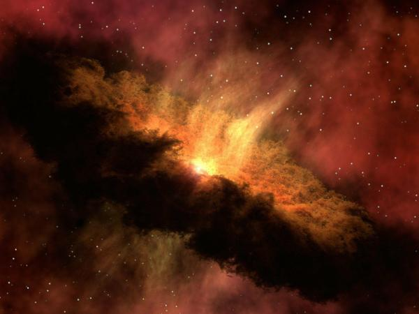

01
El Origen del Sistema Solar
Hace aproximadamente 4.6 mil millones de años, una nube de gas y polvo en el espacio interestelar colapsó bajo su propia gravedad. Este proceso dio origen al Sol y a los planetas que forman nuestro sistema solar. La teoría más aceptada es la de la nebulosa solar, donde el Sol y los planetas se formaron a partir del material en rotación alrededor de un núcleo central.
